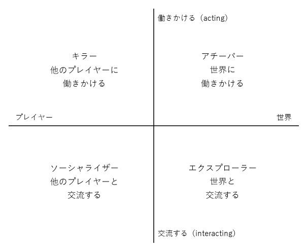
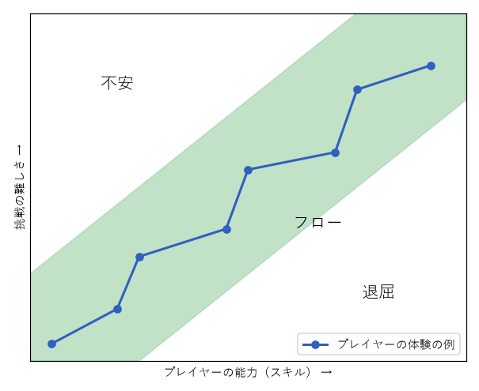

3. 楽しさとプレイヤー
第 2 章では、デザイナーが最終的に作りたいのはプレイヤーの体験（エステティクス）だと述べた。この章では、その体験の中身である「楽しさ」をいくつかの種類に分け、楽しさを感じる側であるプレイヤーの違いと心理を整理する。
3.1. 楽しさは 1 種類ではない
「このゲームは楽しい」と言うとき、その楽しさの中身はゲームによって大きく異なる。難しいパズルを解いた達成感と、美しい景色の中を散歩する心地よさは、どちらも楽しさだが別物である。MDA フレームワークの論文では、エステティクスの例として次の 8 種類を挙げている（論文では、これで全てではないと断っている）。
種類 |
内容 |
例 |
|---|---|---|
感覚（Sensation） |
見る、聞く、触れることそのものの心地よさ |
美しいグラフィック、気持ちのよい効果音、コントローラーの振動 |
空想（Fantasy） |
現実とは別の世界や、別の自分を体験する |
魔法使いになる、宇宙船を操縦する |
物語（Narrative） |
ドラマの展開を追い、登場人物に感情移入する |
物語を重視したアドベンチャーゲーム |
挑戦（Challenge） |
困難を乗り越え、上達する |
難しいアクションゲーム、対戦ゲーム |
仲間（Fellowship） |
他の人と協力したり、交流したりする |
協力プレイ、パーティーゲーム |
発見（Discovery） |
未知の場所や仕組みを見つける |
探索型のゲーム、隠し要素 |
表現（Expression） |
自分の考えや好みを形にする |
建築ゲーム、キャラクターの外見のカスタマイズ |
気晴らし（Submission） |
何も考えずに時間を過ごせる気晴らし |
単純な作業を繰り返す放置型のゲーム |
1 つのゲームは複数の楽しさを含むが、特に重視する楽しさは限られる。設計の最初に「このゲームで最も大事にする楽しさはどれか」を決めておくと、後でルールやレベルの判断に迷ったときの基準になる。例えば「挑戦」を重視するなら難しさの調整に力を入れ、「発見」を重視するなら隠し要素や探索の余地を増やす、といった具合である。
ゲームデザイナーのニコール・ラザロは、プレイヤーの表情や行動の観察から、楽しさを 4 つにまとめた分類も提案している。
種類 |
内容 |
|---|---|
ハードファン（Hard Fun） |
難しい目標に挑み、失敗を重ねた末に達成する楽しさ |
イージーファン（Easy Fun） |
好奇心のままに探索したり、試したりする楽しさ |
シリアスファン（Serious Fun） |
遊ぶことで気分が変わったり、現実の何かがよくなったりする楽しさ |
ピープルファン（People Fun） |
他の人と競ったり、協力したり、話したりする楽しさ |
3.2. プレイヤータイプ
同じゲームでも、プレイヤーによって楽しみ方は異なる。研究者のリチャード・バートルは、多人数で遊ぶ初期のオンラインゲーム（MUD）のプレイヤーを観察し、2 つの軸で 4 つのタイプに分類した。

図 3.1 バートルのプレイヤータイプ
横軸は関心の対象が「他のプレイヤー」か「ゲームの世界」か、縦軸は対象に「働きかける」か「交流する」かを表す。
タイプ |
楽しみ方 |
満足させる要素の例 |
|---|---|---|
アチーバー（Achiever） |
得点、キャラクターのレベル、収集などの目標を達成する |
実績、ランキング、収集要素 |
エクスプローラー（Explorer） |
世界の隅々を調べ、仕組みを理解する |
隠し部屋、広いマップ、奥深いシステム |
ソーシャライザー（Socializer） |
他のプレイヤーとの会話や交流を楽しむ |
チャット、ギルド、協力プレイ |
キラー（Killer） |
他のプレイヤーに勝ち、影響を与える |
対戦、ランキングの上位争い |
この分類は、性格診断のように人を 1 つのタイプに決めつけるためのものではない。1 人のプレイヤーの中にも複数のタイプの傾向があり、遊ぶ日の気分によっても変わる。また、元は MUD の観察から生まれた分類なので、1 人で遊ぶゲームにそのまま当てはまるとは限らない。それでも「自分のゲームはどのタイプの楽しみ方に応えているか」「どのタイプを取りこぼしているか」を考える手がかりとして役に立つ。
3.3. 動機付け
プレイヤーはなぜゲームを遊び続けるのか。心理学の自己決定理論では、人が自分から進んで行動する（内発的に動機付けられる）ためには、次の 3 つの欲求が満たされる必要があると考える。
欲求 |
意味 |
ゲームでの満たし方の例 |
|---|---|---|
自律性 |
自分で選び、自分で決めていると感じたい |
攻略の順番や方法を選べる。強制されるチュートリアルを短くする |
有能感 |
自分には能力があり、上達していると感じたい |
適度な難しさ。上達が数値や演出で分かる |
関係性 |
他者とつながっていると感じたい |
協力プレイ、仲間のキャラクター、プレイヤー同士の交流 |
これに対して、得点、アイテム、称号のように行動の外から与えられる報酬を外発的な報酬と呼ぶ。外発的な報酬は行動のきっかけとして強力だが、使い方を誤ると逆効果になる。もともと楽しんでいた活動に報酬を与えると、報酬が無くなったときに以前より意欲が下がることがある。これはアンダーマイニング効果と呼ばれる。ゲームでは、報酬のために遊ぶ状態が続くと、報酬の魅力が薄れたときに遊ぶ理由が無くなってしまう。報酬は、遊びそのものの楽しさを支える脇役として使うのがよい。
3.3.1. 報酬の与え方とその倫理
行動心理学では、報酬をどのような規則で与えるかを強化スケジュールと呼ぶ。代表的なものを次の表に示す。
スケジュール |
報酬の与え方 |
ゲームの例 |
|---|---|---|
固定比率 |
決まった回数の行動ごとに報酬を与える |
敵を 10 体倒すとアイテムがもらえる |
変動比率 |
平均すると一定の回数ごとだが、何回目かは予測できない |
敵を倒すと低い確率で珍しいアイテムが出る |
固定間隔 |
決まった時間が経つと報酬を受け取れる |
毎日のログインボーナス |
変動比率のスケジュールは、行動を最も強く、長く続けさせることが知られている。いつ当たるか分からないからこそ「次こそは」と思わせる力がある。これはゲームを面白くする道具になる一方で、プレイヤーの意思に反して遊び続けさせたり、お金を使わせたりする道具にもなる。
ゲームの中で実際のお金を使ってランダムにアイテムを得る仕組み（いわゆるガチャやルートボックス）は、各国で規制の議論の対象になっている。日本でも 2012 年に、特定の組み合わせをそろえると景品がもらえる「コンプリートガチャ」が景品表示法に違反するとの見解を消費者庁が示した。プレイヤーの不利益になるように誘導する設計はダークパターンと呼ばれる。デザイナーは、自分が作る仕組みがプレイヤーの時間とお金を尊重しているかを常に問う必要がある。
3.4. フロー理論
心理学者のミハイ・チクセントミハイは、人が活動に完全に没頭し、時間を忘れるほど集中している状態をフローと名付けた。フローは、挑戦の難しさと本人の能力がつり合っているときに生じやすい。

図 3.2 挑戦の難しさと能力の関係（フローチャンネル）
挑戦が能力に比べて難しすぎると不安になり、易しすぎると退屈になる。両者がつり合っている帯状の領域をフローチャンネルと呼ぶ。プレイヤーの能力は遊ぶにつれて上がるので、ゲームは挑戦の難しさを少しずつ上げて、プレイヤーをこの帯の中にとどめる必要がある。
図の折れ線のように、実際の体験は帯の中で上下に揺れるほうがよい。新しい挑戦で少し不安側に寄り、それを乗り越えると能力が上がって少し退屈側に寄る。この揺れが緊張と緩和のリズムを作る。難易度の上げ方は第 6 章で、レベルの中での緊張と緩和は第 9 章で詳しく扱う。
フローが生じやすい条件として、チクセントミハイは次のようなものを挙げている。
目標が明確である
行動の結果がすぐに分かる（フィードバックがある）
自分が状況をコントロールしているという感覚がある
注意を妨げるものが少ない
これらは、第 2 章で述べたゲームの特徴（目的、フィードバック、自発的な参加）とよく重なる。ゲームはフローを生みやすい形をしているといえる。
3.5. 意味のある選択
ゲームデザイナーのシド・マイヤーは「ゲームとは興味深い選択の連続である」という趣旨の言葉で知られる。プレイヤーが選択に悩み、その結果を受け止めることが、ゲームを遊ぶことの中心にあるという考え方である。
サレンとジマーマンは、プレイヤーの行動とゲームの結果の関係が次の 2 つの条件を満たすとき、その遊びは意味のあるものになると述べている。
識別できる：行動の結果がプレイヤーに分かる形で示される。
統合されている：その行動が、後の展開やゲーム全体の結果に影響する。
興味深い選択にするための条件と、つまらない選択の典型を次の表にまとめる。
観点 |
内容 |
|---|---|
トレードオフがある |
どの選択肢にも長所と短所がある。攻撃力の高い剣は重く、軽い剣は攻撃力が低い |
判断材料がある |
結果をある程度予測できるだけの情報が与えられている |
結果が見える |
選んだ結果が、後で分かる形で返ってくる |
（悪い例）自明な選択 |
一方が常に優れている選択肢は、選択ではなく作業である |
（悪い例）情報の無い選択 |
判断材料の無い二択は、くじ引きと変わらない |
（悪い例）影響の無い選択 |
どれを選んでも結果が変わらないなら、選ぶ意味が無い |
ただし、選択肢は多ければよいわけではない。一度に考えるべき選択肢が多すぎると、プレイヤーは疲れて考えるのをやめてしまう。序盤は少ない選択肢から始め、慣れるにつれて増やしていくのがよい。
3.6. 演習
好きなゲームを 1 つ選び、8 種類の楽しさのうち、そのゲームが特に重視しているものを 2 つ挙げよ。その根拠となるメカニクスも書け。
同じゲームが、バートルの 4 つのプレイヤータイプそれぞれにどう応えているか（または応えていないか）を考えよ。
遊んでいて退屈になった、または不安になった経験を思い出し、フローチャンネルの図のどこにいたかを説明せよ。
ゲームの中で「つまらない選択」だと感じた場面を挙げ、興味深い選択にするにはどう変えればよいかを提案せよ。